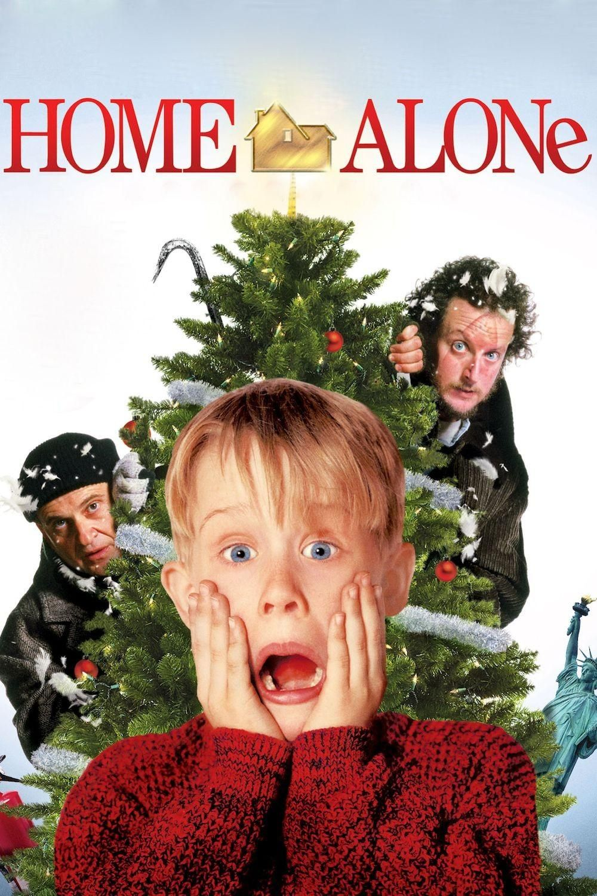
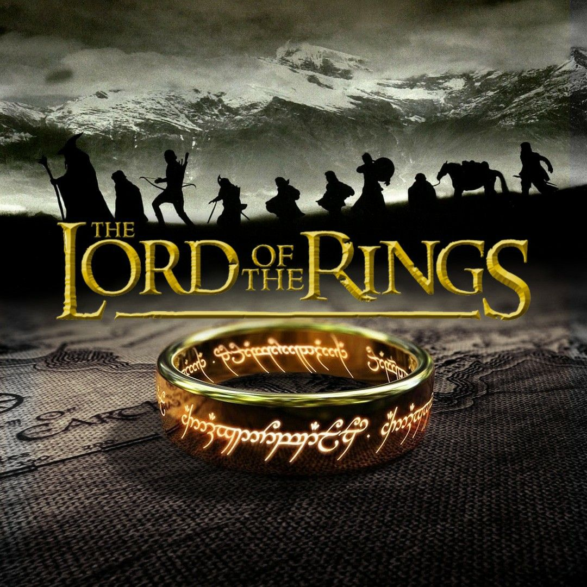

04 — Favorites
Short list. Strongly held opinions.
Black. Not because it's "edgy," just because everything looks better in it.
My playlist is a mix of late-night thoughts, old memories, quiet moments, main-character energy, and songs I probably should have stopped listening to years ago. I like music that feels dreamy and emotional, but I also need a little chaos, confidence, and something I can dance to.
Not really a food person, but adobo and sinigang are the exceptions. Favorite fruits are pineapple and ripe mangoes. No eggs, ever. And if it's sweet, I'm out, give me salty, sour, or spicy any day.
Not really a movie person, but Home Alone and The Lord of the Rings are the exceptions that always pull me back in.

